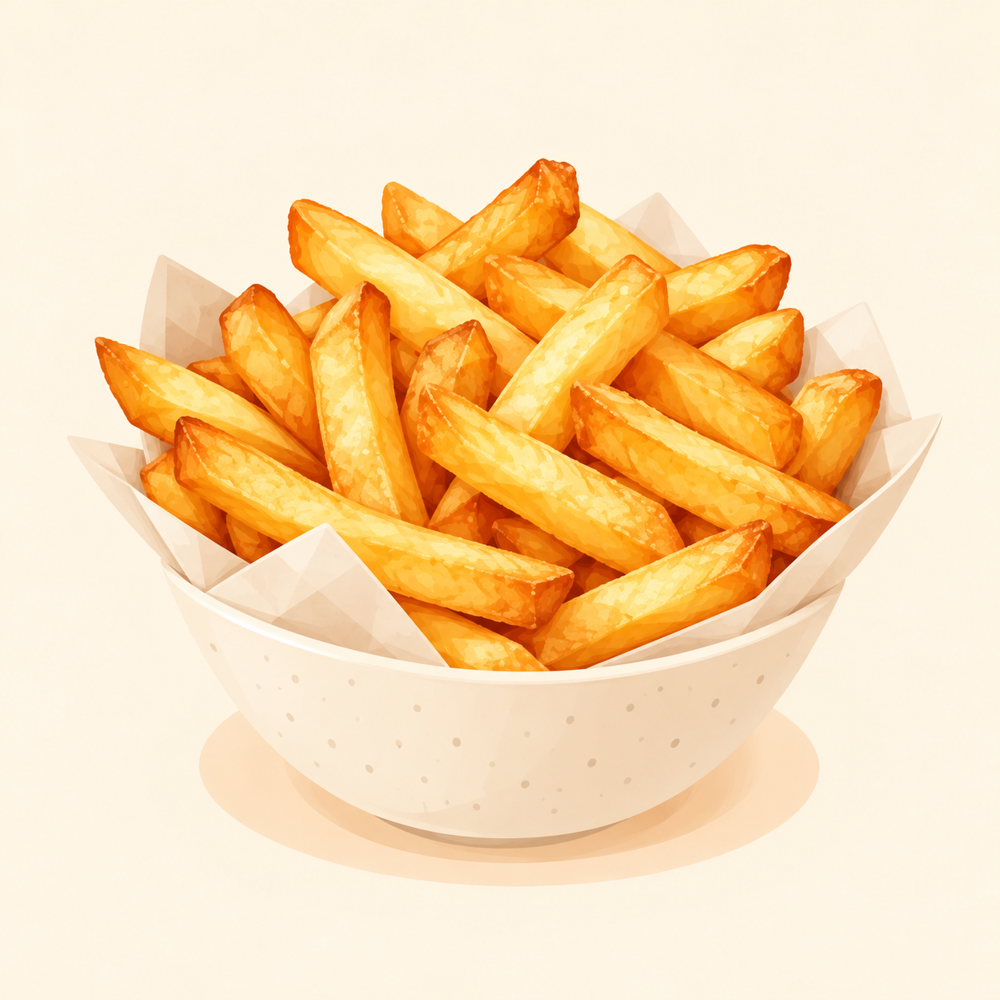

← Alle gerechten
Frietjes uit de airfryer
Krokante frietjes, snel klaar in de airfryer.

4 personen 20 minuten
Ingrediënten
- 800 g diepvriesfrieten voor airfryer
- zout naar smaak
Bereiding
- Verwarm de airfryer voor indien de fabrikant dat adviseert.
- Verdeel de frieten in de mand zonder te overladen. Bak indien nodig in twee porties.
- Bak volgens de instructies op de verpakking, doorgaans 15 tot 20 minuten rond 180–200 °C. Schud halverwege om.
- Controleer of de frieten goudbruin en krokant zijn. Voeg eventueel een beetje zout toe.